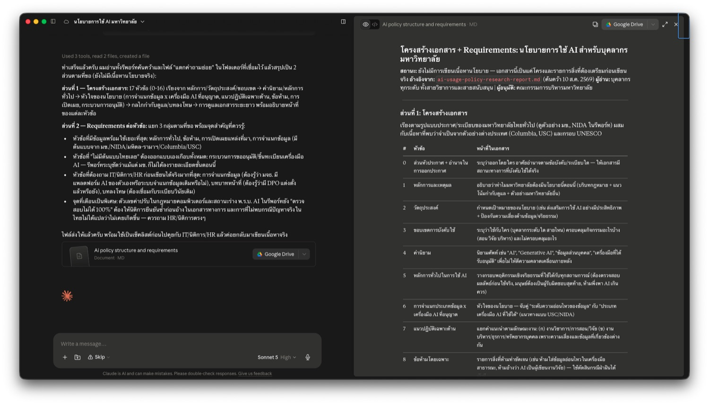

ร่างเอกสารยาวด้วย AI¶
หน้านี้ต่อจาก ค้นคว้าหาข้อมูล โดยตรง — เรามีรีพอร์ทค้นคว้าเรื่องนโยบายการใช้ AI ของมหาวิทยาลัยไทยอยู่ในมือแล้ว ตอนนี้ต้องแปลงเป็นเอกสารจริงที่ส่งเข้าที่ประชุมได้
งานเขียนที่กินเวลาที่สุดของบุคลากรมหาวิทยาลัย ไม่ใช่อีเมลสั้น ๆ — แต่คือเอกสารที่ต้องมีโครงสร้าง มีที่มาที่ไป และมีคนตรวจ เช่น ระเบียบปฏิบัติ ประกาศ คู่มือ หรือ SOP
สถานการณ์ที่เราจะใช้ฝึก¶
คุณต้องร่างนโยบายการใช้ AI สำหรับบุคลากรของมหาวิทยาลัย จากผลค้นคว้าที่ทำไว้ในหน้าที่แล้ว
📄 วัตถุดิบที่มีอยู่แล้ว: รีพอร์ทค้นคว้า — นโยบายการใช้ AI ของมหาวิทยาลัยไทย
จากรีพอร์ทนั้นเรารู้แล้วว่า:
- มหาวิทยาลัยไทยอย่างน้อย 4 แห่งออกนโยบายแล้ว (มข., NIDA, มหิดล-รามาฯ, ธรรมศาสตร์-สหเวชฯ) — มีต้นแบบให้ดู
- ยังไม่มีกฎหมายเฉพาะเรื่อง AI ในมหาวิทยาลัย มีแต่ PDPA และ พ.ร.บ.คอมพิวเตอร์ที่ครอบคลุมโดยอ้อม — มีกรอบกฎหมายที่ต้องไม่ขัด
- บางเรื่องยังยืนยันไม่ได้ และบางเรื่องค้นแล้วไม่พบเลย — มีช่องว่างที่เราต้องตัดสินใจเอง
สิ่งที่ต้องส่ง: ร่างนโยบายที่มีโครงสร้างครบ + บันทึกนำเสนอผู้บริหาร 2 หน้า
เปลี่ยนเป็นเอกสารอื่นก็ใช้ขั้นตอนเดียวกันได้
SOP การเดินทางไปปฏิบัติงาน · คู่มือการใช้ห้องปฏิบัติการ · แนวปฏิบัติการจัดซื้อ · ประกาศเรื่องการลา — ทุกอย่างที่ต้อง "มีโครงสร้าง + มีที่มา" ใช้ 3 แบบฝึกหัดนี้ได้หมด
ก่อนเริ่ม: ทำไมงานร่างเอกสารถึงเสี่ยงกว่าที่คิด¶
ถ้าเปิด AI แล้วพิมพ์ว่า "ช่วยร่างนโยบายการใช้ AI สำหรับบุคลากรมหาวิทยาลัยให้หน่อย" — จะได้เอกสารที่หน้าตาเรียบร้อยมาก มีหัวข้อครบ มีข้อกำหนดเป็นข้อ ๆ อ้างมาตราของกฎหมาย ระบุบทลงโทษ
และหลายส่วนในนั้น AI แต่งขึ้นมาเอง — โดยเฉพาะเลขข้อกฎหมายและชื่อประกาศ
นี่คือความต่างสำคัญระหว่างงานร่างเอกสารกับงานเขียนทั่วไป — เอกสารที่ผิดจะกลายเป็นระเบียบที่คนทั้งองค์กรใช้ต่อ และคนอ่านจะไม่มีทางรู้ว่าข้อไหนมีที่มาจริง ข้อไหน AI เติมให้
| ข้อมูลที่เกี่ยวข้อง | ทำอย่างไร |
|---|---|
| นโยบายของมหาวิทยาลัยอื่นที่เผยแพร่บนเว็บ | อัปโหลดได้ตามปกติ |
| ร่างภายในที่ยังไม่ประกาศ · บันทึกความเห็นจากหน่วยงาน | ใช้บัญชีที่องค์กรจัดให้ |
| ข้อมูลกรณีที่เคยเกิดในองค์กรที่มีชื่อบุคคล | ตัดส่วนที่ระบุตัวบุคคลออกก่อน หรือเล่าเป็นสถานการณ์สมมติ |
แบบฝึกหัดที่ 1: ตั้งโครงเอกสารก่อน — ยังไม่เขียนเนื้อหา¶
ขั้นนี้ไม่ได้ขอเนื้อหาเลยสักบรรทัด — เราขอแค่ 2 อย่าง: โครงสร้างเอกสาร และรายการว่าแต่ละส่วนต้องการข้อมูลอะไรถึงจะเขียนได้
จากรีพอร์ทค้นคว้าที่ทำไว้ ฉันต้องร่างนโยบายการใช้ AI สำหรับบุคลากรของมหาวิทยาลัย
คนที่จะอ่าน: บุคลากรทุกระดับ ทั้งสายวิชาการและสายสนับสนุน
คนที่จะอนุมัติ: คณะกรรมการบริหารมหาวิทยาลัย
ข้อจำกัด: ต้องใช้ได้จริงกับบริบทมหาวิทยาลัยไทย ไม่ใช่แค่แปลจากสากล
ขั้นนี้ยังไม่ต้องเขียนเนื้อหา — ขอ 2 อย่างนี้ก่อน:
1. โครงสร้างเอกสาร: นโยบายแบบนี้ควรมีหัวข้ออะไรบ้าง เรียงลำดับอย่างไร
และแต่ละหัวข้อทำหน้าที่อะไรในเอกสาร
2. Requirements ของแต่ละหัวข้อ: หัวข้อนั้นต้องการข้อมูลอะไรถึงจะเขียนได้จริง แยกเป็น 3 กลุ่ม
- ข้อมูลไหนที่มีอยู่แล้วในรีพอร์ทค้นคว้า
- ข้อมูลไหนที่ต้องถามจากหน่วยงานภายใน (IT / นิติการ / ทรัพยากรบุคคล)
- ข้อมูลไหนที่เป็นการตัดสินใจเชิงนโยบายที่มหาวิทยาลัยต้องกำหนดเอง
ถ้าส่วนไหนไม่มีข้อมูลจริง ให้บอกว่าไม่มี อย่าเติมข้อกำหนดหรือเลขมาตราขึ้นมาเอง
ผลลัพธ์ที่ได้¶

📄 เปิดดูไฟล์เต็ม (ai-policy-structure-and-requirements.md)
ได้โครงเอกสาร 17 หัวข้อ เรียงจาก หลักการ/วัตถุประสงค์/ขอบเขต → คำนิยาม/หลักการทั่วไป → หัวใจของนโยบาย → กลไกกำกับดูแล/บทลงโทษ พร้อม requirements แยก 3 กลุ่มของทุกหัวข้อ
สิ่งที่ได้จากขั้นนี้ที่มีค่าที่สุด — รู้ว่าหัวข้อไหนเขียนได้เลย หัวข้อไหนยังเขียนไม่ได้:
| ประเภทหัวข้อ | ตัวอย่าง | ทำอะไรต่อ |
|---|---|---|
| ข้อมูลพร้อมใช้ (A) เยอะ | หลักการทั่วไป · ข้อห้าม · การเปิดเผยแหล่งที่มา | ร่างได้เลย |
| ต้องถามหน่วยงานภายในก่อน (B) | การจำแนกข้อมูล (ต้องรู้ว่า มจธ. มีระบบชั้นความลับเดิมไหม) · บทบาทหน้าที่ (ต้องรู้ว่ามี DPO แล้วยัง) | ยังร่างไม่ได้ ต้องไปถามก่อน |
| ไม่มีต้นแบบไทยเลย | กระบวนการขออนุมัติ/ขึ้นทะเบียนเครื่องมือ AI | ต้องออกแบบเอง |
กลุ่มที่สามคือส่วนที่สำคัญที่สุด
เรื่องที่มหาวิทยาลัยต้องตัดสินใจเอง — เช่น จะอนุญาตให้ใช้เครื่องมือ AI ตัวไหนบ้าง · จะบังคับให้ระบุการใช้ AI ในงานวิจัยหรือไม่ · จะให้ใช้กับข้อมูลนักศึกษาได้แค่ไหน
นี่คือส่วนที่ AI ทำแทนไม่ได้และไม่ควรทำแทน ถ้าไม่บังคับให้แยกออกมา มันจะกลืนรวมไปกับข้ออื่นจนเราไม่รู้ว่ากำลังรับนโยบายที่ AI คิดให้
ตรวจโครงที่ได้ก่อนไปต่อ: มีหัวข้อไหนที่มหาวิทยาลัยเราต้องมีแต่ AI ไม่ได้ใส่ไหม · มีหัวข้อไหนที่เกินความจำเป็นไหม — แก้ตรงนี้ให้จบก่อน เพราะโครงผิดแล้วเนื้อหาทั้งฉบับผิดตาม
แบบฝึกหัดที่ 2: ร่างทีละหัวข้อไปกับ AI¶
เลือกหัวข้อที่ requirements บอกว่าข้อมูลพร้อมแล้วก่อน — ในเดโมนี้เลือก "หลักการทั่วไปในการใช้ AI" (หัวข้อที่ 5) เพราะ requirements ระบุว่ากลุ่ม (A) มีข้อมูลดี (UNESCO + มข. + ธรรมศาสตร์) และกลุ่ม (B) ไม่ต้องถามใครเพิ่ม
อย่าเริ่มจากหัวข้อที่ยังขาดข้อมูล
หัวข้อ "การจำแนกประเภทข้อมูล x เครื่องมือ AI ที่อนุญาต" ดูเหมือนเป็นหัวใจของนโยบายและน่าเริ่มก่อน — แต่ requirements บอกว่ามันเป็นหัวข้อที่ (B) สำคัญที่สุดในทั้งเอกสาร เพราะต้องรู้ก่อนว่า มจธ. มีระบบจำแนกชั้นความลับเดิมอยู่แล้วหรือไม่
ถ้าดันร่างไปเลย จะได้เอกสารที่ดูดีแต่อาจสร้างระบบใหม่ซ้อนกับระบบเดิมที่องค์กรมีอยู่ — เสียเวลาทั้งคนร่างและคนตรวจ
ขั้นที่ 1 — สั่งร่าง โดยล็อกแหล่งข้อมูลให้แคบ¶
ร่างเฉพาะหัวข้อ "หลักการทั่วไปในการใช้ AI" ตามโครงที่วางไว้
ใช้เฉพาะข้อมูลจาก 2 ไฟล์นี้เท่านั้น: รีพอร์ทค้นคว้า และเอกสารโครงสร้าง+requirements
ห้ามเพิ่มหลักการที่ไม่มีที่มาจากสองไฟล์นี้
รูปแบบ:
- เขียนเป็นข้อ ไม่เกิน 6 ข้อ แต่ละข้อไม่เกิน 3 บรรทัด
- ทุกข้อวงเล็บกำกับท้ายว่าอ้างอิงมาจากไหน เช่น (อ้างอิง: UNESCO 2566) หรือ (อ้างอิง: ประกาศ มข. 309/2568)
- ภาษาราชการที่บุคลากรทั่วไปอ่านเข้าใจ ไม่ต้องเป็นทางการจนอ่านยาก
ถ้าข้อไหนเป็นเรื่องที่มหาวิทยาลัยต้องตัดสินใจเอง (กลุ่ม C ใน requirements)
ให้เขียนเป็น "[ต้องตัดสินใจ: ...]" แทนการเขียนล็อกไปเลย
เหตุผลที่ต้องล็อกแหล่งข้อมูลให้แคบ: ถ้าไม่สั่ง AI จะดึงหลักการ AI ethics ทั่วไปจากความรู้ที่ฝึกมา ซึ่งฟังดูดีมากแต่ไม่มีที่มาที่เราตามกลับไปได้ และตอนถูกถามในที่ประชุมว่า "ข้อนี้อ้างจากไหน" เราจะตอบไม่ได้
ขั้นที่ 2 — ยืนยันข้อมูลกับต้นฉบับ ไม่ใช่กับรีพอร์ท¶
รีพอร์ทค้นคว้าเป็นการสรุปของเอกสารต้นฉบับอีกที — ตอนร่างเอกสารทางการ เราต้องกลับไปดูว่าต้นฉบับเขียนไว้ว่าอย่างไรคำต่อคำ
วิธีที่เร็วที่สุด: โหลด PDF นโยบายจากลิงก์ในรีพอร์ท → อัปโหลดเข้า NotebookLM ซึ่งตอบจากไฟล์ที่ให้เท่านั้นและมี citation คลิกกลับไปดูตำแหน่งในเอกสารได้
เอกสารที่แนบมาคือนโยบายการใช้ AI ของมหาวิทยาลัยไทยหลายแห่ง
ในร่างของฉันเขียนไว้ว่า "[วางข้อที่ร่างไว้]" โดยอ้างอิง [ชื่อเอกสาร]
ช่วยยกข้อความจริงจากเอกสารนั้นมาให้ดู พร้อมระบุว่าอยู่ข้อไหน
ถ้าเอกสารไม่ได้เขียนแบบนั้น ให้บอกตรง ๆ ว่าเขียนไว้ว่าอย่างไรแทน
ตรวจ 3 อย่าง:
| ตรวจอะไร | ทำยังไง |
|---|---|
| ข้อความที่อ้างมีจริงไหม | คลิก citation แล้วอ่านย่อหน้ารอบ ๆ ด้วย — ประโยคที่ยกมาอาจถูก แต่ข้อถัดไปมีเงื่อนไขที่พลิกความหมาย |
| อ่านครบทั้งฉบับไหม | ถามถึงเนื้อหาหน้าท้าย ๆ ที่เรารู้ว่ามี ถ้าตอบไม่ได้ = เนื้อหาช่วงท้ายหายไปเงียบ ๆ |
| มีข้อยกเว้นที่ตกหล่นไหม | ถามกลับ: "มีข้อยกเว้นหรือเงื่อนไขพิเศษอะไรที่ยังไม่ได้ยกมา" — เอกสารระเบียบซ่อนข้อยกเว้นไว้เสมอ |
ขั้นที่ 3 — อ่านทบทวนและแก้ดราฟท์ด้วยตัวเอง¶
ขั้นนี้ AI ทำแทนไม่ได้ เพราะเราคือคนเดียวที่รู้บริบทของมหาวิทยาลัยเรา
อ่านร่างทีละข้อแล้วถามตัวเอง 4 คำถาม:
- ข้อนี้มาจากไหน — ถ้าตอบไม่ได้ ให้ตัดออกหรือหาที่มาเพิ่ม ไม่ใช่ปล่อยไว้เพราะมันฟังดูดี
- ข้อนี้บังคับใช้ได้จริงไหม — เช่น "ห้ามพึ่งพา AI เกินควร" ฟังดูดีแต่ไม่มีใครรู้ว่าเท่าไหร่คือเกินควร ต้องเขียนให้เป็นรูปธรรมหรือตัดทิ้ง
- ข้อนี้ขัดกับระเบียบเดิมของเราไหม — จริยธรรมวิจัย จรรยาบรรณ ระเบียบ HR ที่มีอยู่แล้ว
- ข้อนี้เป็นเรื่องที่ผู้บริหารต้องเลือก ไม่ใช่เราเลือกให้หรือเปล่า — ถ้าใช่ ต้องเปลี่ยนเป็น
[ต้องตัดสินใจ: ...]
แก้เองได้เลย ไม่ต้องสั่ง AI แก้ทุกอย่าง — การเขียนทับ 2-3 ประโยคด้วยมือเรามักเร็วกว่าและตรงกว่าการอธิบายให้ AI แก้ ให้ใช้ AI ตอนที่ต้องเขียนใหม่ทั้งข้อหรือหาข้อมูลเพิ่มเท่านั้น
ร่างเสร็จหนึ่งหัวข้อแล้ว ทำซ้ำกับหัวข้อถัดไป
วนขั้นที่ 1–3 ทีละหัวข้อจนครบเฉพาะหัวข้อที่ข้อมูลพร้อม — ส่วนหัวข้อที่ต้องรอ (B) ให้เว้นไว้เป็น [รอข้อมูลจาก IT: ...] แล้วรวบไปถามทีเดียว
แบบฝึกหัดที่ 3: เขียนบันทึกนำเสนอผู้บริหาร¶
ร่างนโยบายกับบันทึกนำเสนอเป็นคนละเอกสาร — ผู้บริหารไม่ได้อ่านนโยบายทั้งฉบับก่อนตัดสินใจ เขาอ่านบันทึก 2 หน้าที่บอกว่าจะให้อนุมัติอะไร
หน้าที่ของเราในขั้นนี้คือกำกับโครงสร้าง ไม่ใช่ปล่อยให้ AI เรียบเรียงเอง — เพราะเราคือคนที่อ่านรีพอร์ทและร่างนโยบายมาแล้ว และรู้ว่าอะไรสำคัญต่อผู้บริหารของเรา
ช่วยเขียนบันทึกนำเสนอผู้บริหารประกอบร่างนโยบายนี้ ความยาวไม่เกิน 2 หน้า
ตามโครงสร้างนี้:
1. เรื่องที่ขออนุมัติ (ครึ่งหน้า) — ขออนุมัติอะไร และมีทางเลือก 2-3 ทางอะไรบ้าง
พร้อมข้อดีข้อเสียของแต่ละทาง
2. เหตุผลรองรับ — อ้างอิงจากผลค้นคว้า ทุกข้อมีลิงก์หรือชื่อเอกสารกำกับ
3. ต้นแบบที่ใช้อ้างอิง — เลือกมา 2 แห่ง บอกว่าทำไมเลือกแห่งนั้น และหยิบส่วนไหนมาใช้
4. สิ่งที่ยังไม่รู้และผลกระทบต่อการตัดสินใจ — ถ้าอนุมัติตอนนี้ เสี่ยงตรงไหน
5. ขั้นตอนถัดไป — ใครต้องทำอะไร ภายในเมื่อไหร่
กฎ:
- ใช้เฉพาะข้อมูลจากรีพอร์ทและร่างนโยบาย ห้ามเพิ่มข้อมูลใหม่
- ข้อที่รีพอร์ทระบุว่ายืนยันไม่ได้ ห้ามเขียนเป็นข้อเท็จจริง ให้ใส่ไว้ในข้อ 4 แทน
- ภาษาที่ผู้บริหารอ่านจบใน 5 นาทีแล้วตัดสินใจได้
พรอมต์นี้กำหนด 3 อย่างที่ AI ไม่รู้เอง:
| สิ่งที่กำหนด | ทำไมต้องกำหนดเอง |
|---|---|
| โครงสร้าง 5 ส่วน | AI ไม่รู้ว่าผู้บริหารของเราอยากเห็นอะไรก่อน — ถ้าไม่บอก มันจะเรียงตามลำดับที่ค้นมา ไม่ใช่ลำดับที่ใช้ตัดสินใจ |
| "เสนอ 2-3 ทางเลือก" | บันทึกที่มีข้อเสนอเดียวคือการตัดสินใจแทนผู้บริหาร ไม่ใช่การเสนอ |
| "ข้อที่ยืนยันไม่ได้ ห้ามเขียนเป็นข้อเท็จจริง" | จุดที่ผิดพลาดง่ายที่สุดตอนย่อ — ⚠️ ในรีพอร์ทมักหายไปตอนเรียบเรียงใหม่ |
บอกด้วยว่า AI ช่วยตรงไหน¶
เอกสารที่จะกลายเป็นนโยบายขององค์กร ควรระบุให้ชัดว่า AI มีบทบาทอย่างไรในการจัดทำ เช่นในบันทึกนำส่ง:
"ร่างฉบับนี้ใช้ AI ช่วยค้นคว้าแนวปฏิบัติจากมหาวิทยาลัยอื่นและจัดโครงสร้างเอกสาร โดยผู้จัดทำได้ตรวจสอบข้อมูลอ้างอิงทุกรายการกับเอกสารต้นฉบับแล้ว"
การเปิดเผยเสริมความน่าเชื่อถือ ไม่ได้ลดทอน
ประโยคแบบนี้บอกผู้อ่านสองอย่างพร้อมกัน: เราทำงานเร็วขึ้นด้วยเครื่องมือใหม่ และเรารับผิดชอบการตรวจสอบเอง — ซึ่งเป็นสิ่งที่ผู้อนุมัติอยากรู้มากกว่าว่าใช้เครื่องมืออะไร
อ่านทั้งฉบับก่อนส่งเสมอ
โดยเฉพาะ ข้อ 2 (เหตุผลรองรับ) — เช็คว่าทุกข้อยังมีที่มากำกับอยู่ และไม่มีข้อไหนที่ถูกยกระดับจาก "ยืนยันไม่ได้" มาเป็น "ข้อเท็จจริง" ระหว่างการย่อ
บทเรียนปิดท้าย: อ่านทั้งฉบับก่อนเผยแพร่เสมอ¶
นี่ไม่ใช่แบบฝึกหัด แต่เป็นขั้นที่ข้ามไม่ได้
ตลอดสามแบบฝึกหัดข้างต้น เราตรวจงานทีละหัวข้อ — ซึ่งจำเป็น แต่ไม่พอ เพราะมีความผิดพลาดบางประเภทที่มองไม่เห็นเลยถ้าอ่านทีละส่วน
4 อย่างที่เห็นได้เฉพาะตอนอ่านรวดเดียวทั้งฉบับ¶
| สิ่งที่ต้องดู | ทำไมต้องอ่านทั้งฉบับถึงเห็น |
|---|---|
| ข้อขัดกันเอง | หัวข้อ 5 เขียนว่า "ใช้ AI ได้ตามดุลยพินิจ" แต่หัวข้อ 8 เขียนว่า "ต้องขออนุมัติทุกครั้ง" — แต่ละหัวข้ออ่านแยกกันดูสมเหตุสมผลทั้งคู่ |
| คำเดียวกันใช้คนละความหมาย | "เครื่องมือที่ได้รับอนุมัติ" ในหัวข้อ 4 กับหัวข้อ 10 อาจหมายถึงคนละอย่าง เพราะร่างคนละรอบ |
| น้ำเสียงไม่สม่ำเสมอ | บางหัวข้อเข้มจนอ่านเหมือนคำสั่งลงโทษ บางหัวข้ออ่อนจนไม่รู้ว่าบังคับหรือแนะนำ |
[รอข้อมูลจาก...] ที่หลุดรอด |
placeholder ที่ลืมเติมข้อมูล — ถ้าหลุดออกไปเป็นประกาศจริง จะเสียหายมาก |
วิธีตรวจ¶
1. ให้ AI ช่วยหาจุดขัดกันก่อน
นี่คือร่างนโยบายฉบับเต็มที่รวมทุกหัวข้อแล้ว ช่วยตรวจ 4 อย่าง:
1. ข้อไหนขัดกันเองบ้าง — ระบุว่าข้อไหนกับข้อไหน และขัดกันอย่างไร
2. คำศัพท์ไหนที่ใช้ในหลายข้อแต่ความหมายไม่ตรงกัน
3. ข้อไหนที่ยังเป็น placeholder หรือยังไม่มีที่มาอ้างอิง
4. ข้อไหนที่บังคับใช้จริงไม่ได้เพราะเขียนกว้างเกินไป
ยังไม่ต้องแก้ให้ แค่ชี้จุดมาก่อน
2. แล้วอ่านเองทั้งฉบับอีกรอบ — โดยเฉพาะ 2 จุดที่ AI มักตรวจไม่เจอ:
- สิ่งที่ควรมีแต่ไม่มี — AI ตรวจได้แค่สิ่งที่อยู่ในเอกสาร มันไม่รู้ว่าหน่วยงานเราต้องมีข้อกำหนดเรื่องอะไรอีกที่ยังไม่ได้เขียน
- น้ำเสียงที่ไม่ใช่องค์กรเรา — เอกสารที่ถูกต้องทุกข้อแต่อ่านแล้วไม่เหมือนที่มหาวิทยาลัยเราสื่อสารตามปกติ จะถูกตีกลับด้วยเหตุผลที่คนตีกลับเองก็อธิบายไม่ถูก
เอกสารที่เผยแพร่แล้วดึงกลับไม่ได้
ต่างจากอีเมลที่ส่งผิดแล้วส่งฉบับแก้ตามได้ — ประกาศหรือระเบียบที่ออกไปแล้วจะถูกอ้างอิงต่อ ถูกแชร์ต่อ และถูกใช้เป็นฐานของเอกสารฉบับอื่น
เวลาที่ใช้อ่านทวนทั้งฉบับ 30 นาที ถูกกว่าการออกประกาศแก้ไขทีหลังมาก
สรุป¶
| ขั้น | สิ่งที่ทำ | เทคนิคหลัก |
|---|---|---|
| 1 | ขอโครงสร้าง + requirements ยังไม่เขียนเนื้อหา | แยก "ข้อมูลที่มีแล้ว" / "ต้องไปถามใคร" / "นโยบายที่ต้องตัดสินใจเอง" |
| 2 | ร่างทีละหัวข้อ → ยืนยันกับต้นฉบับ → แก้เอง | เริ่มจากหัวข้อที่ข้อมูลพร้อม ล็อกแหล่งข้อมูลให้แคบ |
| 3 | เขียนบันทึกนำเสนอผู้บริหาร | กำกับโครงสร้างเอง เสนอเป็นทางเลือก ไม่ใช่ล็อกคำตอบ |
| — | อ่านทั้งฉบับก่อนเผยแพร่ | ข้อขัดกันเองและน้ำเสียงที่ไม่สม่ำเสมอ เห็นได้เฉพาะตอนอ่านรวดเดียว |
หลักการที่ใช้ได้กับเอกสารทุกชนิด
- โครงสร้างก่อนเนื้อหาเสมอ — เอกสารที่โครงผิด แก้ทีหลังแพงกว่ามาก
- ให้ข้อมูลจริงไปด้วย อย่าให้ AI หาเอาเองในหัว โดยเฉพาะเรื่องกฎหมายและเลขมาตรา
- สั่งให้เว้นช่องว่างไว้ ดีกว่าปล่อยให้เติมเอง —
[รอข้อมูลจาก...]เห็นชัดกว่าข้อความที่ดูสมเหตุสมผลแต่ไม่มีที่มา - ถามหาสิ่งที่ตกหล่น ไม่ใช่แค่ตรวจสิ่งที่ได้มา — กับเอกสารระเบียบ ความเสียหายมักมาจากข้อยกเว้นที่ไม่ถูกยกมา
- ร่างทีละส่วน ตรวจได้ทัน แก้ได้ตรงจุด
สิ่งที่ไม่ควรทำ
- สั่งร่างทั้งฉบับรวดเดียวแล้วส่งต่อ — เอกสารยิ่งเรียบร้อย ยิ่งตรวจยากว่าข้อไหนไม่มีที่มา
- ใช้เลขมาตราหรือชื่อประกาศที่ AI เขียนมา โดยไม่เปิดเอกสารต้นฉบับ
- เชื่อว่า AI อ่านครบทั้งเล่ม — เอกสารยาวเกินขีดจำกัด เนื้อหาช่วงท้ายหายไปโดยไม่มีคำเตือน
- ปล่อยให้ AI ตัดสินเรื่องเชิงนโยบายแทนผู้บริหาร — หน้าที่ของมันคือเสนอทางเลือก ไม่ใช่เลือกให้
- ส่งร่างนโยบายให้ผู้บริหารโดยไม่มีบันทึกนำเสนอ — เขาไม่ได้อ่านทั้งฉบับก่อนตัดสินใจ
- เผยแพร่โดยไม่อ่านทวนทั้งฉบับ — ข้อขัดกันเองมองไม่เห็นตอนตรวจทีละหัวข้อ
ลิงก์สำหรับอาจารย์เท่านั้น
บทสนทนา Claude Cowork ที่ใช้สาธิตหน้านี้ — เปิดดู session